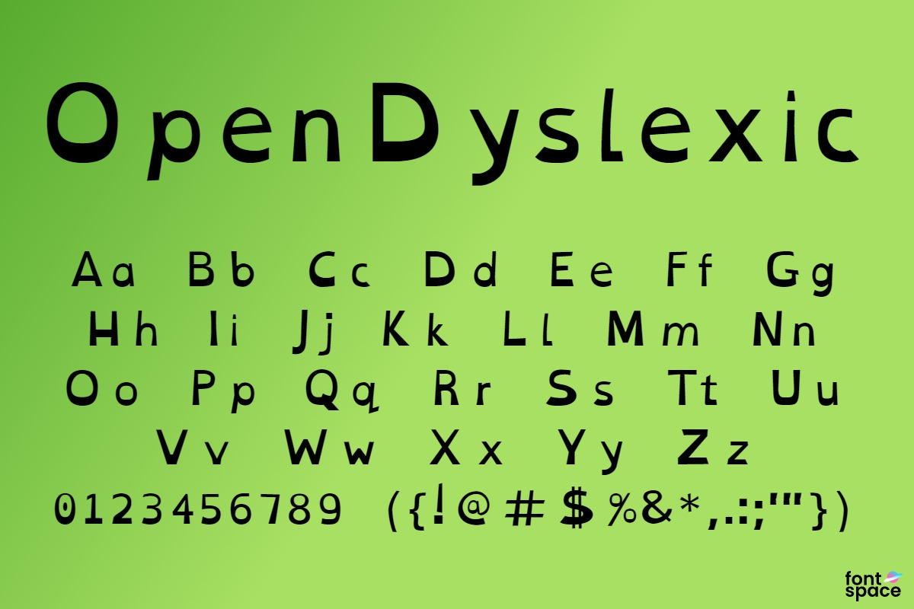
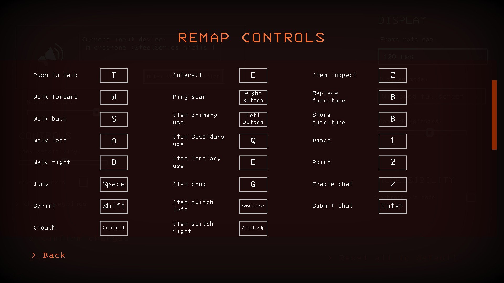
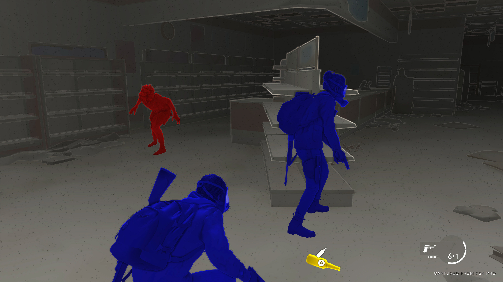

What Brings You Back
Accessible Game Design
Context
Description
In What Brings You Back you play as a depressed teenager, who lost his happiness and must find it back! Through photographing his favorite park he slowly starts seeing beauty in life again and getting his happiness back. As you do, the colour of the world comes back and his world view changes.
This is a puzzle-adventure, narrative driven game, where you have to explore the map and solve riddles to further progress in the narrative.
Team: 3 people (1 Game Designer/Project Manager/Programmer; 1 Game Artist; 1 Music Composer/Sound Designer)
My role: Game Designer/Project Manager/Programmer
Development time (up to vertical slice): 5 months
Game Engine: Unreal Engine 5
Other programs used: Notion, Google Docs, Excel, Powerpoint, Blender, Adobe Substance Painter, PureRef, GitHub, Adobe Photoshop
What have I learned with this project?
With coming up with these accessible features for our game I consolidated knowledge I had been gathering in that year. This was a very helpful exercise to put into practice what I had learnt. Not only that, but it was also the beginning of a routine; from now on, when I come up with games, I always try to think of accessible features that can be implemented on them.
Planned Accessibility features
In this section I’ll explain a bit the bare minimum of accessibility features we wanted to implement in our final game. Please note that these features aren’t implemented in the vertical slice.
Dyslexia Font
Due to our game's high amount of text and the heavy narrative content, we figured that having the dyslexia font option would be only reasonable.

Remappable Controls
As it should be standard, allowing players to have remappable controls is the bare minimum. We want everyone to have the ability to choose how they prefer how to play and what is most comfortable for them.

High Contrast Colour Mode
Due to our game’s puzzle system being highly visual, we believed we needed to implement at least one feature to help people with visual impairments.
The high contrast colour mode would be a perfect feature to help with puzzle solving in our game. We would highlight all the possible riddle objects in a colour, as well as the camera batteries in the environment (this in the full game). This would help all the players that find it hard to distinguish between background assets and intractable assets.

Text Narration / Riddle Narration
We had planned for our game to have riddle narration build-in, as well as a button that narrates the notebook pages. This is especially helpful if the player has some visual impairment, or if they struggle with long bits of text. This could even be a way to make the game more comfortable for players that just prefer to have the text narrated to them instead of reading.
Overall, just a nice feature to have that is both helpful and allows for better game experience customization.
One Hand Mode
This feature would be game changing for players that only have one hand. Furthermore, it could also be helpful for any player that finds this gamemode more comfortable or practical in any occasion (ex eating chips while playing).
The idea behind this feature is that one button would be assigned to switch the input of WASD from character movement to camera movement. This way the player doesn’t need a mouse to play.
Wanna Know More About This Project?
Check Out Our Game Page!